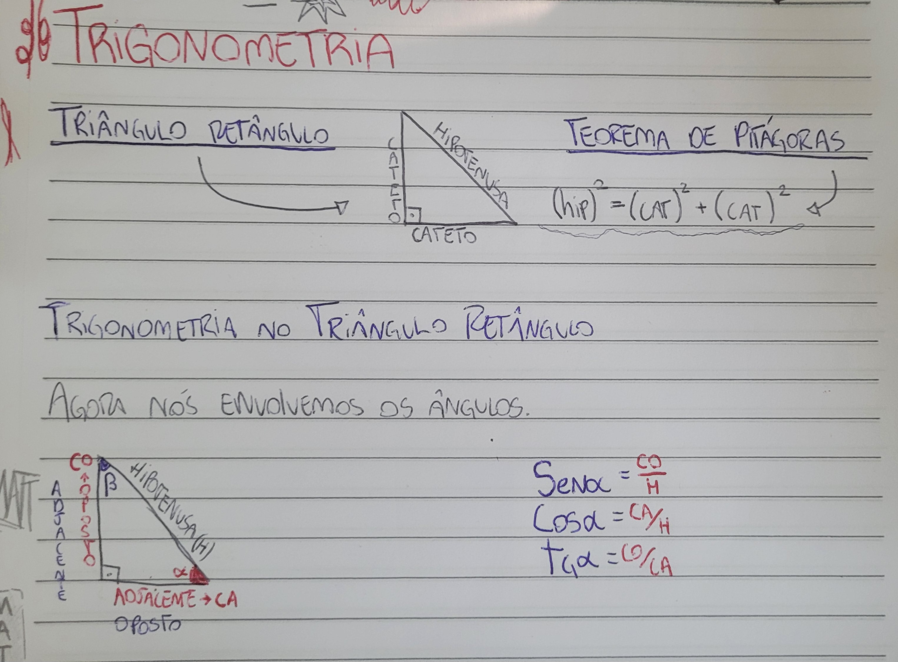

|
Na prática, a trigonometria é usada principalmente para resolver triângulos, ou seja, para calcular lados ou ângulos desconhecidos com base em dados conhecidos. Para isso, empregam-se as razões trigonométricas seno, cosseno e tangente em triângulos retângulos, bem como as leis dos senos e dos cossenos em triângulos de qualquer tipo. Esses cálculos são valiosos para resolver problemas de geometria, topografia, navegação e várias outras situações em que é preciso medir distâncias ou ângulos indiretamente. Uma aplicação prática significativa reside na representação de fenômenos periódicos, como ondas sonoras, luz e movimento de objetos que seguem trajetórias cíclicas. Funções trigonométricas, como seno e cosseno, possibilitam a descrição matemática dessas variações e a previsão de comportamentos futuros. Dessa forma, a trigonometria ultrapassa a resolução de triângulos e se torna uma ferramenta essencial em áreas como física, engenharia elétrica, arquitetura e computação. |
 |